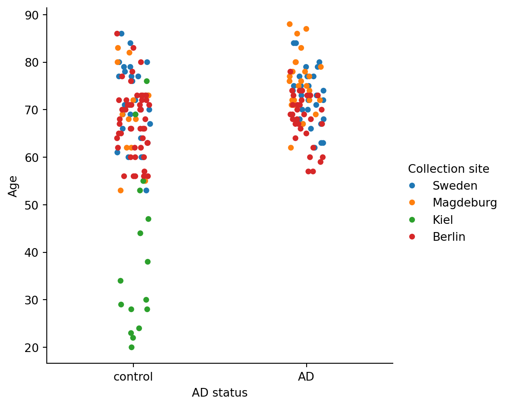
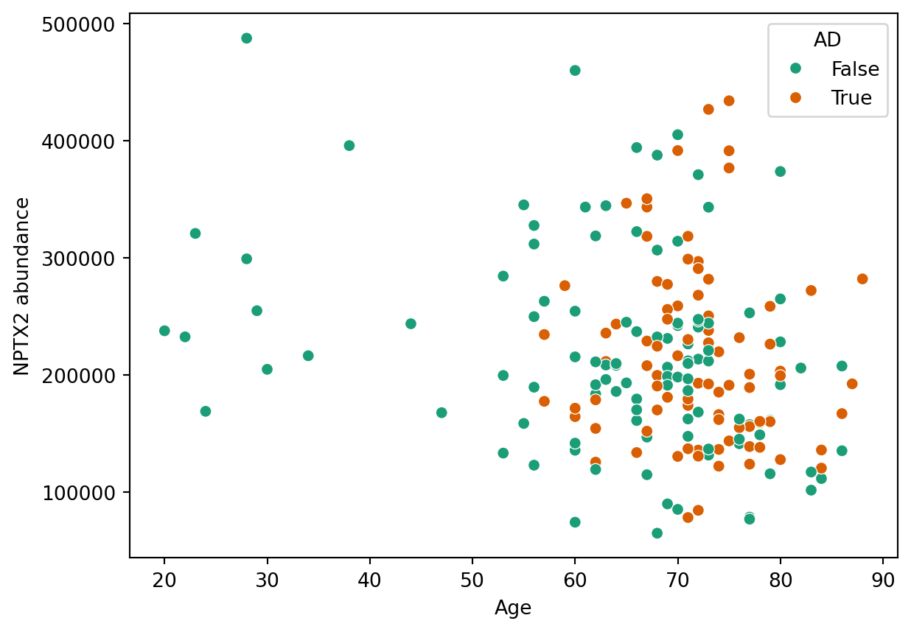

Use the Bader et al. 2020 dataset to train a machine learning model which can test whether NPTX2 (identified as AD biomarker in Shen et al. 2024) can be used to predict whether a patient has AD using CSF samples.
Background
Alzheimer’s disease (AD) is a neurodegenerative disorder affecting millions of people worldwide. Approximately 1% of AD cases are classified as autosomal dominant Alzheimer’s disease (ADAD), meaning they are caused by mutations to the genes PSEN1, PSEN2, or APP. Almost all people with these mutations will go on to develop AD, typically with a younger onset than those with sporadic Alzheimer’s disease (sAD). With the genetic cause of ADAD generally understood but many causes of sAD unclear, studying the molecular basis of ADAD disease progression can inform how sAD may develop.
Proteomics is an approach which involves looking at the entire complement of proteins expressed within a cell, tissue, or organism. Proteomics experiments can generate powerful molecular insights, such as by showing which proteins are up- or downregulated in different diseases. These experiments often generate very large datasets, which can be overwhelming to analyse. However, data science approaches such as machine learning can greatly enhance our ability to extract useful information from these datasets.
Using a cerebrospinal fluid (CSF) proteomics database taken from mutation carriers or non-carriers for ADAD, the authors sought to find biomarkers for the disease. The authors identify six proteins which can be used to predict with high accuracy whether a patient is a mutation carrier or a non-carrier for ADAD. One of these proteins is NPTX2.
The study also reveals that many ADAD-associated proteins are associated with sAD as well, which could represent a large step forwards in diagnosis of sAD (the more common form of AD).
Your task is to test whether this proposed biomarker for ADAD can also predict whether a patient has developed sAD.
Questions
Patient X, aged 70, has visited their doctor with cognitive symptoms. After taking a CSF sample and performing mass spectrometry, the abundance of NPTX2 was detected as 321700.
Using the data from a publicly available database of CSF samples taken from healthy or AD patients, create an appropriate ML model to predict whether Patient X has Alzheimer’s Disease. Comment on why you chose this model and how reliable it is.
Patient X does have AD. Did your model predict this? If not, why might this be?
Dataset
The complete data can be found in the supplementary files below:
This data requires pre-processing. You may like to do this yourself as an exercise in tidying data, or you can use the processed form EMBO_Bader_2020_AD_proteomics_NPTX2_tidy.xlsx.
Pre-processing of the data
This was challenging for three main complexities intrinsic to the original Excel spreadsheets found in the paper:
The 1st spreadsheet in the supplementary info of the paper had all the protein abundances from the ~200 patients. However, there was no other information in this spreadsheet about the patients (not even disease status). Information about the patients was in a 2nd spreadsheet. This second spreadsheet contained all the information including age, disease status, collection site, and gender. However, some patients had been deleted so that this 2nd spreadsheet had fewer patients, requiring the patients to be matched using the ‘sample name’ column.
Missing values - a couple of the patients had missing values for NPTX2 (written as ‘filtered’). For simplicity in this demonstration, I deleted these entries. However, this can introduce artifacts - see this course for more information on how to handle missing values:
In the 1st spreadsheet (proteomics dataset), 1000s proteins were all listed, with each protein in a separate row and each patient (with codified ‘sample name’) in a separate column. To tidy the data, I made a column for each variable, or feature (AD status, NPTX2 abundance, age, gender), with each patient, or observation, in a row.
Worked example of analysis
See below for a worked example, with additional exercises and questions to consider.
Importing pandas and reading Excel file
import pandas as pdNPTX2_tidy = pd.read_excel("extra/data/EMBO_Bader_2020_AD_proteomics_NPTX2_tidy.xlsx")NPTX2_tidy.head()
Patient
Age
Gender
Collection site
AD status
NPTX2 abundance
sample name
0
Patient 1
71
f
Sweden
control
226437.734375
20180618_QX0_JaBa_SA_LC12_5_CSF1_1_8-1xD1xS1fM...
1
Patient 2
77
m
Sweden
AD
123887.046875
20180618_QX0_JaBa_SA_LC12_5_CSF1_1_8-1xD1xS1fM...
2
Patient 3
75
m
Sweden
AD
391305.937500
20180618_QX0_JaBa_SA_LC12_5_CSF1_1_8-1xD1xS1fM...
3
Patient 4
72
f
Sweden
AD
296838.531250
20180618_QX0_JaBa_SA_LC12_5_CSF1_1_8-1xD1xS1fM...
4
Patient 5
63
f
Sweden
AD
211497.703125
20180618_QX0_JaBa_SA_LC12_5_CSF1_1_8-1xD1xS1fM...
Importing seaborn and visualising data
import seaborn as sns
To compare NPTX2 abundance in control vs AD groups open the data in Jupyter Notebooks. Use a suitable plot to visualise the distribution of NPTX2 abundance between the control and AD patients. What do you notice and what does this indicate about the suitability of this protein as a biomarker?
From this initial glance, it is apparent that the two groups have similar distributions of NPTX2 abundance, which indicates that this may not be a good biomarker for AD status in this dataset, as we would expect AD patients to have higher levels of NPTX2.
Further data analysis
How are the different variables distributed (e.g. AD status, age, within different collection sites)?
NPTX2_tidy.dtypes #Checking data types. Object = categoricalx=NPTX2_tidy["AD status"]y=NPTX2_tidy["NPTX2 abundance"]NPTX2_tidy.value_counts(x)
AD status
control 108
AD 87
Name: count, dtype: int64
This reveals that there are more AD than control patients. Is this important?
NPTX2_tidy.groupby(by=["AD status"]).mean(numeric_only =True) #Grouping by AD status to see how all numerical conditions vary across AD vs control
Age
NPTX2 abundance
AD status
AD
71.885057
214289.209052
control
64.407407
217592.649342
Looking at the mean ages and NPTX2 abundances shows that the NPTX2 is very similar between the 2 groups (as mentioned earlier). Also, there is difference in age between the two groups. How might this affect our interpretation of the data?
This scatterplot also shows that the control group has a population of younger patients not present in the AD group. Let’s see if that population clusters with another variable (e.g. collection site)
pd.crosstab(index=NPTX2_tidy["AD status"], columns=NPTX2_tidy["Gender"]) #The cross-tabulation allows you to look at the frequency distribution of multiple categorical variables, and see how they are related to one anothersns.catplot(data=NPTX2_tidy, x="AD status", y="Age", hue="Collection site")pd.crosstab(index=NPTX2_tidy["AD status"], columns=NPTX2_tidy["Collection site"])
Collection site
Berlin
Kiel
Magdeburg
Sweden
AD status
AD
32
0
26
29
control
50
16
12
30

This shows that all of the patients from the Kiel subset are control – there are no AD patients – and this cohort is disproportionately younger than the other chorts. How might this affect the dataset, or the way that we analyse it?
As an extension task, after you fit your model the first time, try it without the Kiel dataset. Does this affect your result?
df = pd.DataFrame(NPTX2_tidy)df.head()
Patient
Age
Gender
Collection site
AD status
NPTX2 abundance
sample name
0
Patient 1
71
f
Sweden
control
226437.734375
20180618_QX0_JaBa_SA_LC12_5_CSF1_1_8-1xD1xS1fM...
1
Patient 2
77
m
Sweden
AD
123887.046875
20180618_QX0_JaBa_SA_LC12_5_CSF1_1_8-1xD1xS1fM...
2
Patient 3
75
m
Sweden
AD
391305.937500
20180618_QX0_JaBa_SA_LC12_5_CSF1_1_8-1xD1xS1fM...
3
Patient 4
72
f
Sweden
AD
296838.531250
20180618_QX0_JaBa_SA_LC12_5_CSF1_1_8-1xD1xS1fM...
4
Patient 5
63
f
Sweden
AD
211497.703125
20180618_QX0_JaBa_SA_LC12_5_CSF1_1_8-1xD1xS1fM...
Classification
Here we will use k-nearest neighbours for predicting categories of data (AD or healthy). To use it, we need to encode our data into a binary form which the algorithms can process:
In a Jupyter environment, please rerun this cell to show the HTML representation or trust the notebook. On GitHub, the HTML representation is unable to render, please try loading this page with nbviewer.org.
Parameters
n_neighbors
10
weights
'uniform'
algorithm
'auto'
leaf_size
30
p
2
metric
'minkowski'
metric_params
None
n_jobs
None

I am asking the question “Is patient y 0 or 1 (negative or positive) for AD?”
pred = pd.DataFrame({"Age": [70], "NPTX2 abundance":[297500]}) # Make a new DataFrame containing the X valuespred["AD"] = model.predict(pred) # Make a prediction and add that data into the tablepred
Age
NPTX2 abundance
AD
0
70
297500
True
Now test the reliability of your model. What is your model score? Would you use this model on real patients? Comment on the quality of the data you used in this exercise.